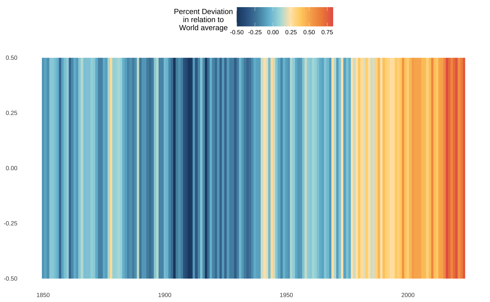
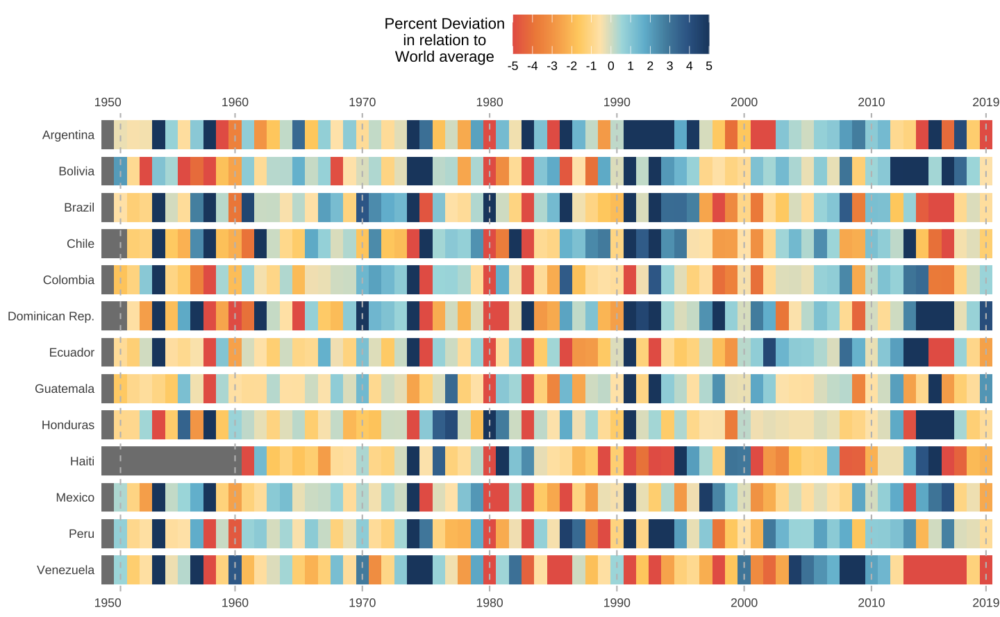

Graficos ou mapas de calor
Mapas de calor apresentam a variação de uma variável num plano bidimensional. Há dois tipos principais de mapas de calor: o mapa de calor espacial e o mapa de calor de clusters.
O primeiro tipicamente é superimposto sobre um mapa e representa a intensidade de alguma variável, como a pluviosidade, temperatura, concentração de C02 e assim por diante.
Já o mapa de calor de clusters é disposto numa matriz bidimensional para sugerir padrões, tendências, ou mesmo para visualizar a evolução de uma variável num grupo de classes.
O pacote ggplot2 não tem uma função única para montar mapas de calor, então vamos explorar uma abordagem simples focada na função geom_tile(). Contudo, é possível montar mapas de calor também com as funções geom_bin_2d(), geom_density_2d(), geom_raster() ou geom_hex().
Neste post vamos nos focar em mapas de clusters para depois apresentar apenas brevemente alguns mapas de calor.
O código abaixo carrega os pacotes necessários. Para a paleta de cores vou utilizar o pacote MetBrewer, que oferece algumas paletas de cores interessantes, inspiradas em artistas famosos do Metropolitan Museum de NY. O pacote pwt10 carrega a base de dados da Penn World Table que traz uma série de informações socioeconômicas dos países ao longo dos anos. Por fim, o pacote astsa carrega diversas funções de séries de tempo, mas vamos utilizá-la aqui somente pela base de dados globtemp. Por fim, o pacote GetBCBData serve para importar séries de tempo do Banco Central do Brasil via API.
# Para instalar um pacote do GitHub
remotes::install_github("BlakeRMills/MetBrewer")# Carrega os pacotes
library(dplyr)
library(tidyr)
library(forcats)
library(stringr)
library(ggplot2)
# Paletas de cores (ver acima como instalar)
library(MetBrewer)
# Dados da Penn World Table
library(pwt10)
# Para carregar a base globtemp
library(astsa)
library(GetBCBData)
# Colors
colors_hiroshige <- met.brewer(name = "Hiroshige")Gráfico de calor (clusters)
Exemplo: Crescimento Econômico
Primeiro vamos importar a base de dados da Penn World Table usando o pacote pwt10.
# A base de dados
pwt <- as_tibble(pwt10::pwt10.0)A base tem várias colunas mas vamos nos focar somente nas colunas country, pop (população do país em milhões de habitante) e rgdpe, que o é o PIB (pela ótica da despesa) em milhões de US$ constantes (2017).
| country | isocode | year | currency | rgdpe | rgdpo | pop | emp | avh | hc | ccon | cda | cgdpe | cgdpo | cn | ck | ctfp | cwtfp | rgdpna | rconna | rdana | rnna | rkna | rtfpna | rwtfpna | labsh | irr | delta | xr | pl_con | pl_da | pl_gdpo | i_cig | i_xm | i_xr | i_outlier | i_irr | cor_exp | statcap | csh_c | csh_i | csh_g | csh_x | csh_m | csh_r | pl_c | pl_i | pl_g | pl_x | pl_m | pl_n | pl_k |
|---|---|---|---|---|---|---|---|---|---|---|---|---|---|---|---|---|---|---|---|---|---|---|---|---|---|---|---|---|---|---|---|---|---|---|---|---|---|---|---|---|---|---|---|---|---|---|---|---|---|---|---|
| Brazil | BRA | 1950 | Brazilian Real | 92711 | 89223 | 53 | 17 | 2042 | 1 | 67102 | 83933 | 87798 | 85324 | 227373 | NA | NA | NA | 145828 | 108970 | 144486 | 608567 | NA | NA | NA | 1 | 0 | 0 | 0 | 0 | 0 | 0 | extrapolated | extrapolated | market | no | regular | NA | NA | 1 | 0 | 0 | 0 | 0 | 0 | 0 | 0 | 0 | 0 | 0 | 0 | NA |
| Brazil | BRA | 1951 | Brazilian Real | 96889 | 91904 | 55 | 17 | 2051 | 1 | 70038 | 91417 | 92312 | 87631 | 242814 | NA | NA | NA | 152969 | 113887 | 155273 | 654280 | NA | NA | NA | 1 | 0 | 0 | 0 | 0 | 0 | 0 | extrapolated | extrapolated | market | no | regular | NA | NA | 1 | 0 | 0 | 0 | 0 | 0 | 0 | 0 | 0 | 0 | 0 | 0 | NA |
| Brazil | BRA | 1952 | Brazilian Real | 105943 | 101667 | 56 | 18 | 2060 | 1 | 76213 | 100796 | 101407 | 97895 | 261085 | NA | NA | NA | 167515 | 123881 | 170169 | 705852 | NA | NA | NA | 1 | 0 | 0 | 0 | 0 | 0 | 0 | extrapolated | extrapolated | market | no | regular | NA | NA | 1 | 0 | 0 | 0 | 0 | 0 | 0 | 0 | 0 | 0 | 0 | 0 | NA |
| Brazil | BRA | 1953 | Brazilian Real | 108931 | 105003 | 58 | 18 | 2069 | 1 | 80936 | 100441 | 104321 | 101629 | 272078 | NA | NA | NA | 176028 | 130481 | 171026 | 737951 | NA | NA | NA | 1 | 0 | 0 | 0 | 0 | 0 | 0 | extrapolated | extrapolated | market | no | regular | NA | NA | 1 | 0 | 0 | 0 | 0 | 0 | 0 | 0 | 0 | 0 | 0 | 0 | NA |
| Brazil | BRA | 1954 | Brazilian Real | 118686 | 113983 | 60 | 19 | 2078 | 1 | 88946 | 111934 | 113384 | 110080 | 287037 | 0 | 1 | 1 | 190468 | 143957 | 191257 | 780613 | 0 | 1 | 1 | 1 | 0 | 0 | 0 | 0 | 0 | 0 | extrapolated | extrapolated | market | no | regular | NA | NA | 1 | 0 | 0 | 0 | 0 | 0 | 0 | 0 | 0 | 0 | 0 | 0 | 3 |
| Brazil | BRA | 1955 | Brazilian Real | 127384 | 122678 | 61 | 20 | 2087 | 1 | 94400 | 117254 | 121279 | 118126 | 301169 | 0 | 1 | 1 | 202763 | 153006 | 201258 | 820627 | 0 | 1 | 1 | 1 | 0 | 0 | 0 | 0 | 0 | 0 | extrapolated | extrapolated | market | no | regular | NA | NA | 1 | 0 | 0 | 0 | 0 | 0 | 0 | 0 | 0 | 0 | 0 | 0 | 2 |
| Brazil | BRA | 1956 | Brazilian Real | 131865 | 127205 | 63 | 20 | 2097 | 1 | 97827 | 119971 | 125158 | 122067 | 313178 | 0 | 1 | 1 | 210124 | 159465 | 206719 | 854692 | 0 | 1 | 1 | 1 | 0 | 0 | 0 | 0 | 0 | 0 | extrapolated | extrapolated | market | no | regular | NA | NA | 1 | 0 | 0 | 0 | 0 | 0 | 0 | 0 | 0 | 0 | 0 | 0 | 2 |
| Brazil | BRA | 1957 | Brazilian Real | 143384 | 138373 | 65 | 21 | 2106 | 1 | 104123 | 133653 | 136122 | 132684 | 332711 | 0 | 1 | 1 | 231221 | 170139 | 228611 | 911217 | 0 | 1 | 1 | 1 | 0 | 0 | 0 | 0 | 0 | 0 | extrapolated | extrapolated | market | no | regular | NA | NA | 1 | 0 | 0 | 0 | 0 | 0 | 0 | 0 | 0 | 0 | 0 | 0 | 2 |
| Brazil | BRA | 1958 | Brazilian Real | 151546 | 146430 | 67 | 21 | 2115 | 1 | 113085 | 142400 | 144065 | 141124 | 350683 | 0 | 1 | 1 | 245978 | 184877 | 244075 | 963159 | 0 | 1 | 1 | 1 | 0 | 0 | 0 | 0 | 0 | 0 | extrapolated | extrapolated | market | no | regular | NA | NA | 1 | 0 | 0 | 0 | 0 | 0 | 0 | 0 | 0 | 0 | 0 | 0 | 2 |
| Brazil | BRA | 1959 | Brazilian Real | 158732 | 153143 | 69 | 22 | 2125 | 1 | 116669 | 152878 | 150332 | 147218 | 376789 | 0 | 1 | 1 | 264945 | 191877 | 262297 | 1033868 | 0 | 1 | 1 | 1 | 0 | 0 | 0 | 0 | 0 | 0 | extrapolated | extrapolated | market | no | regular | NA | NA | 1 | 0 | 0 | 0 | 0 | 0 | 0 | 0 | 0 | 0 | 0 | 0 | 2 |
Vamos selecionar apenas os principais países da América Latina para montar nossa visualização.
O primeiro painel que iremos explorar vai exibir os ciclos de expansão e de recessão nos países latino-americanos ao longo dos anos, desde 1950. Para isto vamos primeiro calcular o PIB per capital real de cada país e depois criar uma variável dummy que indica com o valor 1 se o país teve crescimento do PIB per capita real e 0 caso contrário.
Code
# Vetor com países
latam_countries <- c(
"ARG", "BOL", "BRA", "CHL", "COL", "CUB", "DOM", "ECU", "GTM", "HND", "HTI",
"MEX", "PER", "VEN")
latam <- pwt |>
# Filtra apenas as linhas dos países selecionados
filter(isocode %in% latam_countries) |>
# Agrupa por país
group_by(country) |>
mutate(
# Calcula o PIB per capita de cada país
gdppc = rgdpe / pop,
# Calcula a variação do PIB per capita de cada país
d_gdppc = gdppc / lag(gdppc) - 1,
# Cria uma variável binária para indicar se houve crescimento
growth = factor(if_else(d_gdppc > 0, 1L, 0L)),
# Remove parêntesis e o texto dentro dele
country = str_remove(country, " \\(.+\\)"),
# Abrevia o nome da República Dominicana
country = str_replace(country, "Dominican Republic", "Dominican Rep.")
) |>
ungroup()Gráfico de Calor
Apesar de bidimensional, um heatmap serve para representar dados em três dimensões. No nosso caso, a função geom_tile() mapeia as variáveis x e y nas coordenadas enquanto a variável fill representa uma variável numérica adicional, seja ela categórica ou contínua.
O código abaixo monta um heatmap simples. No gráfico, os anos de crescimento e de recessão são destacados em cada país.
ggplot(data = latam, aes(x = year, y = country)) +
geom_tile(aes(fill = growth))
O gráfico acima é bastante interessante, mas pode ser melhorado em diversos aspectos. Vamos implementar as melhorias sequencialmente.
Reordenar as colunas
Note que os países no gráfico acima estão organizados de forma alfabética, mas a ordem está invertida. Para alterar a ordem de uma variável categórica temos que alterar os seus níveis. No R variáveis categóricas tem uma classe especial factor e seus níveis são definidos pelo argumento levels.
Tipicamente, isto envolve definir um vetor com a ordem dos níveis e criar uma variável nova como no exemplo abaixo.
# Vetor com o nome de todos os países latino-americanos
lvls <- unique(latam[["country"]])
# Inverte a ordem do vetor
lvls <- rev(lvls)
# Redefine os níveis da variável country
latam <- latam |>
mutate(country = factor(country, levels = lvls))Há, contudo, vários atalhos para melhor lidar com factors. Em particular, o pacote forcats carregado junto no tidyverse tem uma série de funções que facilitam o trato de variáveis categóricas. A função fct_rev(), por exemplo, serve para inverter a ordem de uma variável categórica.
Assim, o código abaixo chega no mesmo resultado.
# Inverte a ordem da variável country
latam <- latam |>
mutate(country = fct_rev(country))Note que o gráfico está em ordem alfabética, começando na Argentina e terminando na Venezuela.
# Monta o gráfico
ggplot(data = latam, aes(x = year, y = country)) +
geom_tile(aes(fill = growth))
Dimensionar o gráfico
Podemos inserir um pouco de espaço entre as séries de cada país alterando o argumento height da função geom_tile().
ggplot(data = latam, aes(x = year, y = country)) +
geom_tile(aes(fill = growth), height = 0.9)
Alterar as cores
A escolha do esquema de cores é talvez o aspecto mais importante de um heat map. Não é fácil encontrar boas cores que sejam intuitivas e que também sejam inclusivas. Aqui utilizamos uma paleta inspirada no artista plástico Hiroshige Utagawa para conseguir alguns tons de azul/vermelho para representar os anos de expansão/recessão.
# Colors
colors_hiroshige <- met.brewer(name = "Hiroshige")
colors_binary <- colors_hiroshige[c(1, 8)]
p <- ggplot(data = latam, aes(x = year, y = country)) +
geom_tile(aes(fill = growth), height = 0.9) +
# Altera a paleta de cores e controla a legenda
scale_fill_manual(
# Título da legenda (opcional)
name = "",
# Paleta de cores
values = colors_binary,
# Nome das classes na legenda
labels = c("Recession", "Growth"),
# Omite o grupo NA
na.translate = FALSE
)
p
Ajustar e duplicar o eixo
A leitura dos anos no gráfico acima pode ser melhorada. Primeiro, vamos inserir mais quebras no eixo-x e sinalizar que a série tem início em 1951 e tem fim em 2019. Para ajustar o eixo usamos a função scale_x_continuous() variando o argumento breaks.
Quando temos um gráfico grande, pode ser útil duplicar os eixos para facilitar a sua leitura. Vamos duplicar o eixo-x (anos) usando sec.axis = dup_axis().
Por fim, note que há espaço ocioso tanto no lado esquerdo como no lado direito do gráfico (espaço entre os “tiles” e a borda do painel do gráfico). O argumento expand = c(0, 0) remove o espaço entre as barras e o limite do painel.
latam_na <- latam |>
filter(!is.na(growth))
p <- p +
# Controla o eixo-x (anos)
scale_x_continuous(
# Define as quebras do gráfico
breaks = c(1951, seq(1960, 2010, 10), 2019),
# Preenche 100% do painel
expand = c(0, 0),
# Duplica o eixo
sec.axis = dup_axis()
)
p
Ajustar o tema
Os ajustes finos de um gráfico são feitos com a função theme(). Neste caso, queremos um gráfico com poucos elementos. Uma abordagem simples para modificar os detalhes do gráfico é inicar com um template, um tema padrão. Neste caso, começamos como um tema chamado theme_minimal().
p <- p +
# Tema minimalista que serve de template
theme_minimal() +
theme(
# Remove o título dos eixos x e y
axis.title = element_blank(),
# Remove as linhas horizontais e verticais no fundo do gráfico
panel.grid.major = element_blank(),
panel.grid.minor = element_blank(),
# Coloca a legenda acima do gráfico
legend.position = "top"
)
pAdicionar linhas de grade
As linhas de grade de um gráfico facilitam a interpretação dos dados, mas a função geom_tile() fica por cima delas. Podemos sobrepor linhas verticais no gráfico para sinalizar o início de cada uma das décadas.
O código abaixo faz isto com a função geom_vline() que serve para desenhar linhas verticais num gráfico com o argumento xintercept. O argumento linetype = 2 indica que a linha deve ser tracejada.
p <- p +
# Desenha linhas verticais no gráfico
geom_vline(
# Define a posição das linhas verticais
xintercept = c(1951, seq(1960, 2010, 10), 2019),
# Tipo de linha (2 = tracejado)
linetype = 2,
# Cor da linha
colour = "gray75"
)
p
Ajustar o nome dos eixos
p <- p +
labs(
title = "Growth/Recession across Latin America",
subtitle = "Cycles are synchronized across countries. The 1980s was a difficult period for most countries, while the mid 2000s\nonwards was more positive overall due to the commodtiy boom.",
caption = "Source: Penn World Table (pwt10)"
)
pO gráfico final
O código abaixo gera o gráfico finalizado.
ggplot(data = latam, aes(x = year, y = country)) +
geom_tile(aes(fill = growth), height = 0.9) +
geom_vline(
xintercept = c(1951, seq(1960, 2010, 10), 2019),
linetype = 2,
colour = "gray75") +
scale_fill_manual(
name = "",
values = colors_binary,
labels = c("Recession", "Growth"),
na.translate = FALSE
) +
scale_x_continuous(
breaks = c(1951, seq(1960, 2010, 10), 2019),
expand = c(0, 0),
sec.axis = dup_axis()
) +
labs(
title = "Growth/Recession across Latin America",
subtitle = "Cycles are synchronized across countries. The 1980s was a difficult period for most countries, while the mid 2000s\nonwards was more positive due to the commodtiy boom.",
caption = "Source: Penn World Table (pwt10)"
) +
theme_minimal() +
theme(
axis.title = element_blank(),
panel.grid.major = element_blank(),
panel.grid.minor = element_blank(),
legend.position = "top"
)Usando variáveis contínuas
O exemplo acima mostra os ciclos de expansão e recessão usando uma simples variável binária. Este tipo de variável é também chamada de “discreta” (ou, às vezes, “contável”).
Pode-se adaptar o código acima para montar gráficos de calor para variáveis contínuas. Para evitar a repetição excessiva de código podemos criar uma função. Funções permitem que você automatize tarefas repetitivas; no fundo, evita que você tenha que ficar copiando e colando código.
Vou criar uma função simples que: (1) adiciona as linhas verticais tracejadas sempre nos mesmos anos; (2) ajusta e duplica o eixo-x do gráfico; e (3) aplica um tema padrão sobre o gráfico. O nome desta função será gg_heatmap() e o argumento da função será um gráfico “base” de ggplot2. Isto deve ficar mais compreensível após os exemplos.
O código abaixo mostra a implementação da função.
Funções
# Cria um tema para os gráficos
theme_heatmap <- theme_minimal() +
theme(
axis.title = element_blank(),
panel.grid.major = element_blank(),
panel.grid.minor = element_blank(),
legend.position = "top",
legend.key.size = unit(1, "cm"),
legend.title = element_text(vjust = 0.75, hjust = 0.5)
)
gg_heatmap <- function(plot) {
plot <- plot +
# Desenha linhas verticais no gráfico
geom_vline(
# Define a posição das linhas verticais
xintercept = c(1951, seq(1960, 2010, 10), 2019),
# Tipo de linha (2 = tracejado)
linetype = 2,
# Cor da linha
colour = "gray75"
) +
# Controla o eixo-x (anos)
scale_x_continuous(
# Define as quebras do gráfico
breaks = c(seq(1950, 2010, 10), 2019),
# Preenche 100% do painel
expand = c(0, 0),
# Duplica o eixo
sec.axis = dup_axis()) +
# Adiciona o tema
theme_heatmap
return(plot)
}PIB per capita
Como exemplo vamos olhar para o PIB per capita dos países da América Latina. Para melhorar a visualização uso os dados em escala logarítmica.
No código abaixo eu utilizo a função gg_heatmap() criada acima. Primeiro eu crio um gráfico de calor “base” usando apenas geom_tile() e modificando a escala de cor. Depois, aplico a função neste objeto e o resultado é o gráfico final.
# Monta o mapa
p <- ggplot(data = latam, aes(x = year, y = country)) +
geom_tile(aes(fill = log(gdppc)), height = 0.9) +
scale_fill_gradientn(
name = "PIB per capita (log)",
colours = met.brewer("Hokusai1")
)
# Aplica a função
gg_heatmap(p)O gráfico de calor abaixo apresenta o PIB per capita em nível e com uma paleta de cores diferente. Note como o uso da função gg_heatmap() economiza muitas linhas de código.
p <- ggplot(data = latam, aes(x = year, y = country)) +
geom_tile(aes(fill = gdppc / 1000), height = 0.9) +
scale_fill_viridis_c(name = "PIB per capita (mil)")
gg_heatmap(p)Inflação
Mapas de calor também podem servir para construir visualizações no formato de um “calendário de observações”. A visualização abaixo é adaptada do meu post Visualizando o IPCA e mostra o valor acumulado do IPCA em 12 meses a cada mês, desde janeiro de 2010. Os dados são importados do Banco Central do Brasil usando o pacote GetBCBData e uso o pacote lubridate para transformar os dados.
Code
#> Importa a série do IPCA a partir da API do Banco Central
ipca <- GetBCBData::gbcbd_get_series(
id = 433,
first.date = as.Date("1998-01-01")
)
#> Limpeza de dados
ipca <- ipca |>
mutate(
#> Cria uma coluna com o ano da observação
year = lubridate::year(ref.date),
#> Cria uma coluna com o mês da obervação
month = lubridate::month(ref.date, label = TRUE, locale = "pt_BR"),
#> Acumula os valores do IPCA em 12 meses
acum12m = RcppRoll::roll_prodr(1 + value / 100, n = 12) - 1,
acum12m = acum12m * 100
) |>
filter(ref.date >= as.Date("2010-01-01"))ggplot(ipca, aes(x = month, y = year, fill = acum12m)) +
geom_tile(color = "gray90") +
scale_x_discrete(position = "top") +
scale_y_reverse(breaks = 2010:2023, expand = c(0, 0)) +
scale_fill_viridis_c(
name = "Var. percentual\ndo IPCA acumulada\nem 12 meses",
option = "magma",
breaks = seq(2, 12, 2),
labels = paste0(seq(2, 12, 2), "%")) +
labs(title = "Inflação no Brasil") +
theme_heatmap +
theme(
axis.text = element_text(size = 11, color = "gray15")
)
Na visualização vê-se como os anos iniciais de 2010-14 foram marcados por uma inflação moderadamente alta, oscilando entre 4-6%. Em 2015, libera-se os preços administrados, que ficaram artificialmente represados durante o período eleitoral, e a inflação estoura, chegando e depois superando a casa de 10%. Nos anos seguintes, a inflação é mais baixa, caindo até a casa de 2-3%. A quebra da série acontece durante a pandemia, quando a inflação chega a 12% e passa vários meses acima de 10%.
Tecnicamente, vale notar o uso da função scale_x_discrete já que a variável de mês é armazenada como factor. Inverte-se a escala dos anos usando scale_y_reverse, assim os anos vão “de cima para baixo”, na direção mais natural de leitura. Por fim, especifico manualmente os valores de quebras na legenda de cores, dentro da função scale_fill_viridis_c.
Energia elétrica
Pode-se usar mapas de calor para explorar a presença de padrões sazonais nos dados. A visualização abaixo é adaptada do meu post sobre nascimentos no Brasil mas olha para o consumo mensal de energia elétrica. Mais especificamente, a série apresenta o consumo residencial de energia elétrica desde 2002: escolhe-se este ano para evitar o apagão de 2021, que distorceria muito a visualização. Cada quadrado apresenta o consumo do mês, relativamente ao consumo total naquele ano.
Como podia-se imaginar, o consumo de energia é mais elevado nos meses quentes: dezembro, janeiro, fevereiro e março apresentam os maiores valores. Já nos meses de inverno, em contraste, o consumo costuma ser menor. O pico da série aparece em janeiro de 2015, quande houve um verão particularmente quente1.
Code
#> Importa a série de consumo residencial de energia elétrica a partir da
#> API do Banco Central
energia <- GetBCBData::gbcbd_get_series(
id = 1403,
first.date = as.Date("1980-01-01")
)
#> Limpeza de dados
energia <- energia |>
mutate(
mes = lubridate::month(ref.date, label = TRUE, locale = "pt_BR"),
mes = fct_rev(mes),
ano = lubridate::year(ref.date)
) |>
#> Agrupa por ano e calcula o consumo percentual em cada mês relativamente ao ano
group_by(ano) |>
mutate(cons_rel = value / sum(value) * 100) |>
ungroup() |>
#> Começa a série em 2002 para evitar o "apagão" em 2001.
filter(ano > 2002, ano < 2023)ggplot(energia, aes(x = ano, y = mes, fill = cons_rel)) +
geom_tile(color = "gray90") +
scale_x_continuous(breaks = 2001:2022, expand = c(0, 0), position = "top") +
scale_fill_viridis_c(name = "Consumo de Energia\nem relação ao ano (%)") +
theme_heatmap +
theme(
legend.title = element_text(vjust = 0.8),
axis.text = element_text(size = 11, color = "gray15")
)
Escala divergente
Outra aplicação de gráficos de calor é de mostrar uma variável num gradiente de cores “divergente”. Um caso comum é quando quer-se mostrar uma variável como um desvio em relação a alguma média. Em geral, há duas possibilidades para visualizar os dados:
- O desvio dos valores em relação à média na “coluna”, isto é, entre os grupos. No caso do mapa de calor do PIB per capita isto seria equivalente a comparar o crescimento dos países (grupo) no mesmo ano.
- O desvio dos valores em relação à média na “linha”, isto é, dentro de um mesmo grupo. Novamente, no caso do mapa de calor do PIB per capita, isto seria equivalente a comparar o crescimento do país num ano em relação ao histórico de crescimento do país.
Não há uma escolha certa ou errada com este tipo de visualização. É preciso saber somente qual tipo de relação que se quer visualizar.
Aquecimento Global
O exemplo abaixo usa a base globtemp que mensura as “anomalias de temperatura” nos últimos anos. Por anomalia de temperatura, entende-se, o desvio da temperatura média anual em relação à média histórica (1951-1980). Esta visualização é adaptada do meu post Aquecimento Global.
Na visualização, fica evidente que os anos recentes concentram um grande número de “anomalias positivas”, isto é, anos em que a temperatura média esteve acima da média histórica. Este exemplo é bastante simples pois existe apenas um “grupo”, logo, os valores estão representados como desvios em relação à média na “linha”.
# Carrega a base de dados 'globtemp'
data("globtemp")
# Converte o objeto para data.frame
df <- data.frame(ano = as.numeric(time(globtemp)),
temp = as.numeric(globtemp))
# Monta o gráfico
ggplot(data = df, aes(x = ano, y = 0, fill = temp)) +
geom_tile() +
scale_fill_gradientn(
name = "Percent Deviation\nin relation to\nWorld average",
breaks = seq(-1, 1, 0.25),
colors = rev(met.brewer("Hiroshige")),
) +
theme_heatmap
PIB per capita
Restringindo a análise somente à América Latina, há duas maneiras intuitivas de olhar os dados: (1) relativamente ao ano (coluna); (2) relativamente ao país (linha).
No primeiro caso, compara-se a performance entre os países em cada ano: vê-se quais foram os países que cresceram mais ou menos em determinado ano. No segundo caso, compara-se a trajetória de cada país individualmente: fica mais evidente quais foram os anos de maior ou de menor crescimento.
O código abaixo usa a função scale para “normalizar” os dados2.
# Escala os dados em relação ao país
scale_country <- latam |>
group_by(country) |>
mutate(scaled = as.numeric(scale(d_gdppc)))
# Escala os dados em relação ao ano
scale_year <- latam |>
group_by(year) |>
mutate(scaled = as.numeric(scale(d_gdppc)))O primeiro gráfico mostra o crescimento do PIB per capita anual relativamente ao crescimento médio do país. Note como oscila o crescimento da Argentina: anos de crescimento acima da média são imediatamente seguidos por anos de crescimento abaixo da média durante quase toda a sua história.
Já o Brasil parece ter um crescimento mais ao estilo “voos de galinha”, com alguns poucos anos de crescimento excepcionais aglomerados. Vale notar, também, como a presença da Venezuela entre os países acaba distorcendo a escala.
p <- ggplot(data = scale_country, aes(x = year, y = country)) +
geom_tile(aes(fill = scaled)) +
scale_fill_gradientn(
name = "Desvio em relação\nao crescimento\nmédio do país",
breaks = seq(-4, 4, 1),
colours = colors_hiroshige
)
gg_heatmap(p) +
ggtitle("Crescimento relativo ao país")
Agora o gráfico mostra o crescimento anual de cada país em comparação com os demais países latinoamericanos. O padrão revela quais países cresceram mais ou menos em cada ano.
De maneira geral, o Brasil parece crescer ligeiramente acima da média da região. A Venezuela, que no gráfico anterior parecia exibir um crescimento relativamente estável ao longo dos anos, agora apresenta um padrão com maior oscilação.
Dos anos 2000 em diante, Bolivia, Chile, Colombia e Peru são os países que consistentemente crescem acima da média da região. Novamente o colapso econômico da Venezuela acaba distorcendo a escala de cores.
p <- ggplot(data = scale_year, aes(x = year, y = country)) +
geom_tile(aes(fill = scaled)) +
scale_fill_gradientn(
name = "Desvio em relação\nao crescimento\nmédio de cada ano",
breaks = seq(-4, 4, 1),
colours = colors_hiroshige
)
gg_heatmap(p) +
ggtitle("Crescimento relativo ao ano")Suponha que seja interessante descobrir quais países estão crescendo acima ou abaixo da média mundial. Para chegar nesta resposta precisa-se primeiro fazer um pouco de manipulação nos dados.
Code
# Calcula o PIB per capita mundial e o seu crescimento
world <- pwt |>
group_by(year) |>
summarise(
gdp = sum(rgdpe, na.rm = TRUE),
n = sum(pop, na.rm = TRUE)) |>
mutate(
gdppc_world = gdp / n,
d_gdppc_world = gdppc_world / lag(gdppc_world) - 1) |>
select(year, gdppc_world, d_gdppc_world)
# Calcula a razão do PIB per capita local x mundial e o desvio do
# crescimento do PIB per capita em relação à média mundial
#
latam_scaled <- latam |>
left_join(world, by = "year") |>
mutate(
scaled = gdppc / gdppc_world * 100,
deviation = (d_gdppc - d_gdppc_world) / d_gdppc_world)
# Trunca os outliers para melhorar a visualização
outlier <- boxplot.stats(latam_scaled$deviation)$stats[c(1, 5)]
latam_scaled <- latam_scaled %>%
mutate(
deviation_trunc = if_else(deviation > 5, 5, deviation),
deviation_trunc = if_else(deviation < -5, -5, deviation_trunc)
)Após a manipulação de dados acima, pode-se visualizar o crescimento da América Latina em relação ao resto do mundo. O primeiro gráfico abaixo mostra o desvio percentual do crescimento doméstico em relação à média mundial naquele ano.
Vê-se como, de maneira geral, os países latino-americanos tiveram dificuldades para acompanhar o resto do mundo nos anos 1980. Além disso, a maior parte dos países parece ficar próxima ou abaixo da média. A exceção é durante o começo dos anos 1990 e os anos do boom de commodities (2000-2012). Além disso, vê-se como a recessão brasileira de 2015-17, apesar de ter sido influenciada por uma leve desaceleração global, foi majoritariamente uma crise interna.
p <- ggplot(data = latam_scaled, aes(x = year, y = country)) +
geom_tile(aes(fill = deviation_trunc), height = 0.8) +
scale_fill_gradientn(
name = "Percent Deviation\nin relation to\nWorld average",
breaks = seq(-5, 5, 1),
colors = met.brewer("Hiroshige")
)
gg_heatmap(p)
Gráfico de calor espacial
library(here)
imoveis <- readr::read_csv(here("posts/ggplot2-tutorial/sample_imoveis_sp.csv"))
imoveis <- distinct(imoveis, lng, lat, .keep_all = TRUE)ggplot(data = imoveis, aes(x = lng, y = lat)) +
geom_bin_2d()
ggplot(data = imoveis, aes(x = lng, y = lat)) +
geom_hex(aes(weight = price))
Resumo
Vale explorar outros pacotes que incluem paletas de cores como
- ColorBrewer:
scale_fill_brewer() - Viridis:
scale_fill_viridis_c(),scale_fill_viridis_d() - Paletteer:
scale_color_paletteer_d() - Para os cinéfilos: Wes Anderson, Ghibli
Footnotes
Vale reforçar que este não foi o pico absoluto de consumo de energia no país: os dados representam o consumo percentual de energia em relação ao total de energia consumida no ano.↩︎
O termo “normalizar” é um tanto abusado hoje em dia, em contextos estatísticos. A função
scalesubtrai cada valor pela sua média e divide o resultado pelo desvio padrão.↩︎